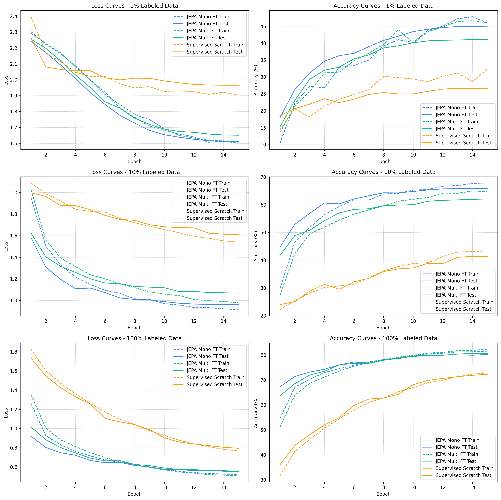
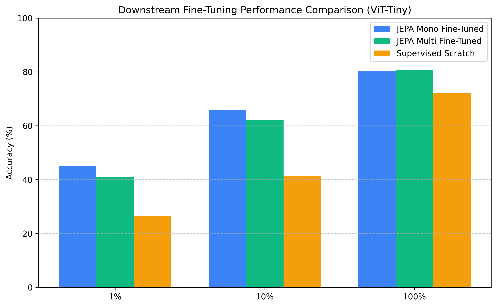
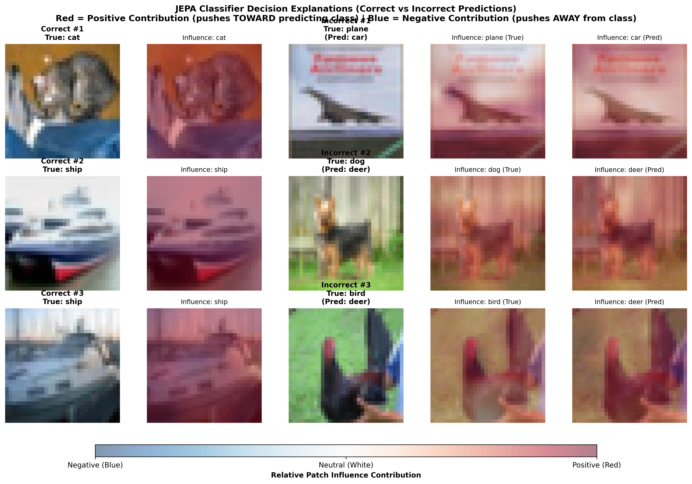
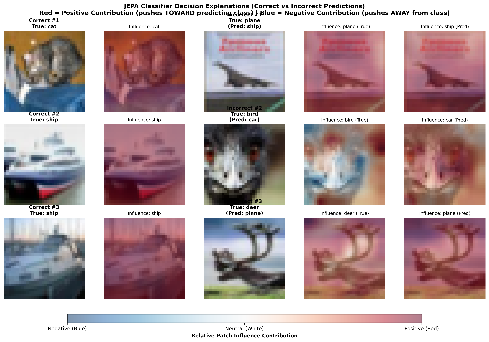
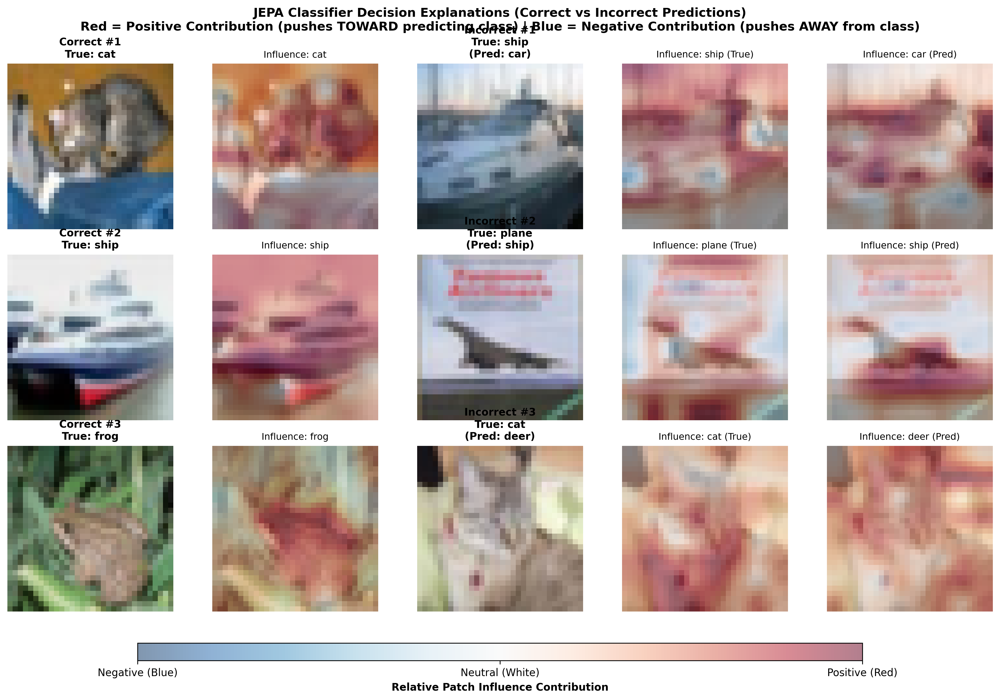

Ce document analyse les raisons théoriques et empiriques pour lesquelles le passage du Linear Probing (sonde linéaire) au Fine-Tuning (ajustement fin) permet d'obtenir des gains de performance spectaculaires sur CIFAR-10 à partir des représentations apprises par I-JEPA.
📊 Comparaison des Performances Réelles (ViT-Tiny)
Voici la synthèse des résultats obtenus sur CIFAR-10 :
| Fraction Labellisée | Linear Probe (Gelé) | Fine-Tuning (Ajustement Fin) | Gain de Précision | Supervised Scratch (FT aug) |
|---|---|---|---|---|
| 1% (500 imgs) | 28.75% | 45.02% | +16.27% | 26.51% |
| 10% (5000 imgs) | 46.29% | 65.80% | +19.51% | 41.34% |
| 100% (50000) | 55.56% | 80.22% | +24.66% | 72.30% |
 Figure 1 : Courbes d'entraînement et de test pour la sonde linéaire face au Scratch.
Figure 1 : Courbes d'entraînement et de test pour la sonde linéaire face au Scratch.
 Figure 2 : Comparaison globale des performances de classification de la sonde linéaire.
Figure 2 : Comparaison globale des performances de classification de la sonde linéaire.

Figure 3 : Courbes d'entraînement et de test pour le Fine-Tuning face au Scratch.
Figure 4 : Comparaison globale incluant le Fine-Tuning.Note : Les résultats de Fine-Tuning ci-dessus mettent en évidence l'incroyable vitesse de convergence et la supériorité de l'initialisation JEPA par rapport à un entraînement supervisé à partir de zéro.
🔍 Pourquoi le Linear Probing est-il limitant pour les petits modèles (ViT-Tiny) ?
Dans le cadre du Linear Probing, l'encodeur est entièrement gelé. Le classifieur n'est qu'une simple couche linéaire ($W \cdot x + b$) entraînée à séparer les représentations issues du modèle par des hyperplans (frontières de décision droites).
Cela pose plusieurs limites majeures :
-
La nature non-linéaire des concepts réels : Le pré-entraînement auto-supervisé (I-JEPA) regroupe les patches par sémantique (comme le montre notre clustering K-Means : ciel, textures d'animaux, structures métalliques). Cependant, ces concepts ne sont pas forcément alignés de façon strictement linéaire par rapport aux classes finales de CIFAR-10 (par exemple, "ciel bleu" et "métal" appartiennent tous deux à la classe
planemais aussi à la classeship). Une sonde linéaire ne peut pas tordre ou réarranger l'espace latent pour démêler ces intersections ; elle ne peut que couper l'espace de manière rectiligne. -
La capacité limitée du ViT-Tiny : Les grands modèles (comme ViT-Huge ou ResNet-50 pré-entraînés sur ImageNet) produisent des représentations extrêmement riches et linéairement séparables par simple effet d'échelle (over-parameterization). Un petit modèle comme
ViT-Tiny(~2.7M de paramètres) n'a pas la capacité de projeter d'emblée des représentations parfaites et rectilignes sans supervision. Ses représentations sont d'excellents points de départ, mais elles nécessitent un léger ajustement sémantique.
💡 Le "Pourquoi du Comment" du succès du Fine-Tuning
Le Fine-Tuning surpasse largement le Linear Probing et l'entraînement à partir de zéro (Scratch) grâce à la synergie de trois facteurs clés :
1. Une initialisation sémantique pré-entraînée (Warm-Start)
Contrairement à un modèle entraîné from scratch (qui part de poids aléatoires et doit apprendre ce qu'est un contour, une texture, puis un objet), le modèle fine-tuné démarre avec des poids JEPA qui ont déjà appris : * La continuité spatiale des objets (grâce à la prédiction par masquage de blocs). * L'invariance aux petites transformations. * L'attention sur l'objet plutôt que sur le décor (comme prouvé par les heatmaps d'attention).
Le modèle n'a pas à réapprendre à "voir", il doit juste apprendre à "catégoriser".
2. Les Taux d'Apprentissage Différentiels (Discriminative LRs)
C'est le levier technique le plus important de notre implémentation : $$\text{LR}_{\text{encoder}} = 10^{-4} \quad \text{vs} \quad \text{LR}_{\text{head}} = 10^{-3}$$ * L'encodeur s'ajuste très lentement. Cela l'empêche d'oublier catastrophiquement (catastrophic forgetting) les abstractions géométriques et visuelles robustes apprises pendant le pré-entraînement SSL. * La tête apprend 10 fois plus vite pour cartographier rapidement les représentations latentes ajustées vers les 10 classes de CIFAR-10.
3. La Data Augmentation avancée
L'une des faiblesses du Fine-Tuning sur de petits datasets (1% ou 10%) est le risque de surapprentissage (overfitting) rapide puisque l'encodeur est dégelé. L'intégration de transformations d'images adaptées :
* RandomCrop(32, padding=4)
* RandomHorizontalFlip()
* ColorJitter()
permet d'injecter de la variabilité à chaque époque. L'encodeur ne peut pas simplement mémoriser les pixels des 500 images du jeu de données 1% ; il est contraint d'ajuster ses poids internes de manière à conserver sa robustesse de généralisation.
📈 Analyse comparative face au modèle supervisé de zéro (Scratch)
Pourquoi le Fine-Tuning écrase-t-il aussi le modèle supervisé classique sur les petits volumes ? * À 1% de données : Le modèle supervisé classique n'a pas assez d'exemples (seulement 50 images par classe) pour apprendre à la fois à extraire des features visuelles cohérentes et à classifier. Il overfitte rapidement. Le Fine-Tuning JEPA, quant à lui, exploite l'extraction de features sémantiques déjà acquises pour obtenir 45.02% d'accuracy. * À 10% de données : Le Fine-Tuning atteint 65.80% tandis que le scratch plafonne à 41.34%. Le warm-start JEPA confère au modèle un boost d'efficacité de données d'un ordre de grandeur.
🎯 Explicabilité post-Fine-Tuning : Analyse d'influence
Dégeler le modèle permet d'affiner l'attention sémantique globale. Les visualisations des cartes d'influence de classification issues du Fine-Tuning montrent une concentration encore plus nette du signal positif (rouge) sur les attributs discriminants des objets (comme la carrosserie ou les roues pour les véhicules) par rapport au modèle supervisé de zéro.

Figure 5 : Cartes d'influence de classification pour JEPA Mono-cible fine-tuné.
Figure 6 : Cartes d'influence de classification pour JEPA Multi-cible fine-tuné.
Figure 7 : Cartes d'influence de classification pour le modèle supervisé Scratch.🛠️ Recommandation pour la suite des expériences
Pour maximiser encore ces résultats lors de vos entraînements complets :
1. Patience de l'Early Stopping : Laissez le Fine-Tuning tourner au moins 25 à 30 époques avec un CosineAnnealingLR pour permettre aux poids de l'encodeur de se stabiliser sur les données CIFAR-10.
2. Comparaison par taille : Jouez la commande suivante pour observer l'impact du scaling de l'encodeur (Tiny ➔ Small ➔ Base) sous le protocole de Fine-Tuning :
bash
python3 jepa_lab/evaluate_finetuning.py --model-size small --epochs 25